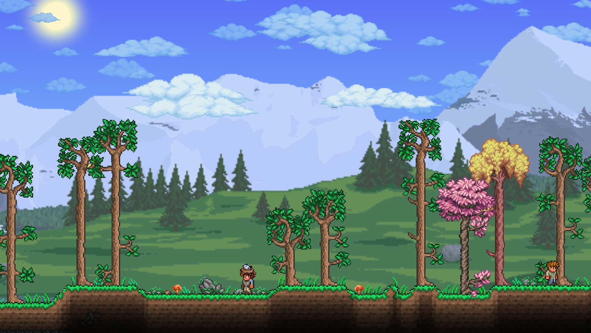

Empezando en Terraria
Publicado: 10 mayo 2025
Cuando inicias una nueva partida en Terraria, apareces en el bioma forestal, una zona relativamente segura con árboles, limos y terreno plano para construir tu primera base. Aquí te damos algunos consejos clave:
- Reúne madera para fabricar herramientas y refugios básicos.
- Evita alejarte demasiado antes del anochecer: los zombis aparecen con fuerza.
- Construye una casa con puerta, pared de fondo y una fuente de luz para evitar enemigos dentro.
- Aprovecha al guía: sus consejos iniciales pueden ayudarte más de lo que parece.
🔨 Mejora inmediata: armas y herramientas básicas
Una vez hayas colocado la mesa de trabajo (work bench), es momento de mejorar tu equipamiento inicial. La guía recomienda fabricar:
- Espada de madera: reemplaza la espada corta inicial. Tiene mejor alcance y golpea en arco, lo que facilita el combate.
- Arco de madera: ideal para mantener distancia frente a enemigos. Fabricá flechas usando madera y piedra.
⛏️ Recolectá materiales esenciales
- Piedra: importante para flechas, hornos y otras recetas más adelante. Podés conseguirla cavando superficialmente.
- Gel: lo sueltan los limos. Combinado con madera, te permite crear antorchas para iluminar tu entorno.
🏠 Construí una base segura antes de que anochezca
Cuando cae la noche, la dificultad aumenta. Los zombis y los Demon Eyes aparecen con frecuencia, y si no tenés refugio puede ser un problema serio.
Una casa básica de madera o tierra es suficiente al principio. Asegurate de incluir:
- Una pared de fondo que cubra todo el interior.
- Una fuente de luz, como una antorcha.
- Al menos una mesa y una silla.
- Una puerta cerrada para evitar el ingreso de enemigos.
Con eso, el juego considerará tu casa como “habitable” y el Guía podrá mudarse.
📦 Organización y exploración
Si lográs sobrevivir la primera noche, al día siguiente podés empezar a explorar. Biomas como el desierto o la tundra pueden estar cerca, pero conviene no adentrarse demasiado sin equipo.
También podés comenzar una mina vertical cerca de tu casa, usando plataformas para descender y volver sin problemas. Esto te permite conseguir minerales temprano y avanzar más rápido.